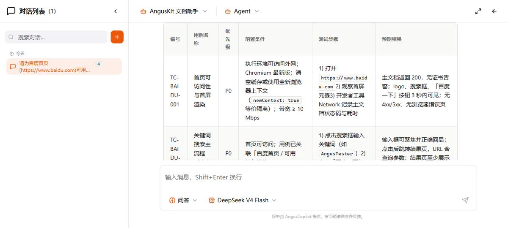
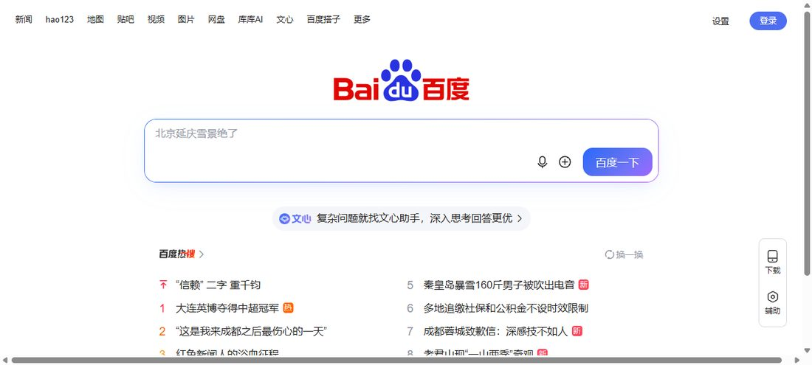

🤖 AI 用例生成模拟器
修改提示词、选择生成数量，点击「生成用例」——平台按本组在 AngusTester 上的真实用例库回放生成过程（含进度条与逐条弹出）。
🧭 在 AngusTester 里找到我们的测试（三步定位）
我们的项目保存在 AngusTester 云端账号下，官网首页看不到项目列表——请先登录控制台，再按下面路径定位。
| 步骤 | 操作 | 定位目标 |
|---|---|---|
| 1 | 打开 GM 工作台，用组内账号登录（本项目注册账号见下） | 统一登录门户 gm.anguskit.com |
| 2 | 进入「测试控制台」，在项目列表中找到项目名 | 百度首页可用性测试（BAI） |
| 3 | 左侧菜单依次查看「测试用例（TC-1~TC-8）」「测试计划」「执行记录与截图取证」 | 8 条 AI 用例 + 执行证据 + 缺陷 DEF-01 |
说明：AngusTester 为 SaaS 平台，用例与执行数据保存在北京集群（bj-c1-prod-apis.anguskit.com）的项目空间内，必须登录后才能看到，直接访问官网首页是找不到的。若无法登录组内账号，本页下方与「用例执行结果」区块完整保留了全部 8 条用例的内容与执行结果，可离线查阅。
AI 生成用例
8条
一句提示词，字段齐全
执行率
87.5%
TC-7 因环境限制未执行
通过 / 部分通过
3+1
核心功能整体正常
缺陷
1个
DEF-01 移动端横向溢出
用例执行结果
8 条用例覆盖可访问性、搜索主流程、边界输入、导航链接、联想提示、兼容性与移动端
| 编号 | 用例名称 | 优先级 | 结果 | 说明 |
|---|---|---|---|---|
| TC-1 | 首页可访问性与首屏渲染 | P0 | 通过 | HTTP 200，首屏 87 ms，核心元素齐全 |
| TC-2 | 关键词搜索主流程（点击提交） | P0 | 阻塞 | 提交触发跳转，被百度风控验证页拦截 |
| TC-3 | 回车键提交搜索 | P1 | 阻塞 | 提交成功携带查询参数，被风控拦截 |
| TC-4 | 空输入与特殊字符边界处理 | P2 | 部分通过 | 空提交无无效跳转，未见脚本执行；结果页校验受风控限制 |
| TC-5 | 首页顶部导航链接可用性 | P1 | 通过 | 抽验 3 个链接全部可达，无 404 |
| TC-6 | 搜索框联想下拉可用性 | P2 | 通过 | 联想 10 条、Esc 关闭正常、无脚本错误 |
| TC-7 | 跨浏览器兼容性 | P2 | 阻塞 | 环境仅 Chromium，无法三内核对比 |
| TC-8 | 移动端视口下的首页可用性 | P2 | 失败 | 375 px 视口横向溢出，顶部导航截断 |
结果分布
通过 3 · 部分通过 1 · 失败 1 · 阻塞 3
AI 用例生成过程
提示词 → 生成 → 人工评审 → 入库 → 建计划 → 执行取证


AI 写用例的效果评价
- 效率：一句提示词生成 8 条格式完整、字段齐全的用例，比人工逐条编写节省约七成设计时间
- 质量：覆盖面较全，网页打开、搜索主流程、异常输入、导航链接、联想提示、浏览器兼容、移动端均被覆盖，步骤与预期清楚可直接执行
- 不足：个别步骤超出实际环境条件（如三浏览器对比），部分边界数据（超长输入）需人工补充
- 模式：“AI 先写一遍 + 人工再看一遍、改一遍”，适合快速搭建回归用例集
缺陷 DEF-01（中等严重度）：移动端视口横向溢出
- 现象：窗口宽度 375 px 时页面右侧超出屏幕、底部出现横向滚动条，顶部导航右侧“设置”入口被截断，导航栏未随窄屏收缩
- 影响：手机用户看不到完整顶部导航，属可用性问题
- 建议：为顶部导航增加窄屏适配（折叠菜单或可滑动容器），并对 320~768 px 区间做回归
风险记录：① 搜索提交被百度风控跳转图形验证码页，属站点反爬策略而非功能缺陷，建议带登录态 Cookie 重试或人工确认；
② AngusTester 平台“关联用例”接口异常（提示成功但用例数为 0），已作为平台问题记录，不影响对百度首页的测试结论。
测试结论
- 百度首页桌面端核心功能正常：可访问、首屏 87 ms、导航链接可达、搜索联想正常，未发现功能缺陷
- 发现 1 个中等严重度缺陷（DEF-01 移动端横向溢出），建议安排修复
- 搜索结果页因风控未能端到端验证，建议补充带登录态的测试环境
- AI 原生测试平台在真实场景中可用：从写提示词、生成用例、入库建计划到执行取证，全程在同一平台完成